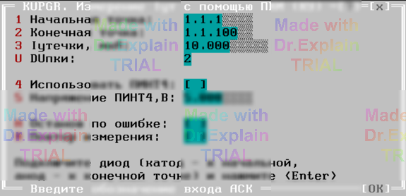

4.12 KUPGR. Измерение тока утечки с помощью ПКИ
Утилита определяет погрешность измерения тока утечки нелинейных элементов командой КУ. Предоставляется меню (см. рисунок 1).

Параметры меню
- «Начальная точка» и «Конечная точка» — входы АСК для подключения выводов магазина эталонных сопротивлений (мегастата).
- «I утечки (мкА)» — величина эталонного тока утечки.
-
«DU пки» — номер диапазона напряжения контроля, выставляемого блоком напряжений (БН):
- 1 — 5 В;
- 2 — 30 В;
- 3 — 100 В;
- 4 — 250 В;
- 5 — 499 В.
Автоматические действия после ввода параметров
- БК, которому принадлежат указанные точки, подключается к шинам A1 и B1.
- Включается КЗШ.
- Начальная точка подключается к шине A1.
- Конечная точка подключается к шине B1.
- КЗШ отключается.
- Устанавливается заданный режим ПКИ; ПКИ подключается к шинам A1 и B1.
- Появляется второе меню (см. рисунок 2).
Введите значение тока, измеренное эталонным амперметром (IЭТ), и нажмите Enter.
Измерение и вывод результатов
Выполняется измерение тока утечки IИЗМ методом поразрядного взвешивания (перебор уставок ПКИ). В протокол выполнения выводятся сообщения вида:
$TST1 Iд.б=10мкА+-15.00% Iизм=10.12мкА Погр=+1.16% $TST1 Измерений:1 Все норма ПОГРmin=0 ПОГРmax=+1.16%
После завершения предоставляется меню (см. п. 6.3).